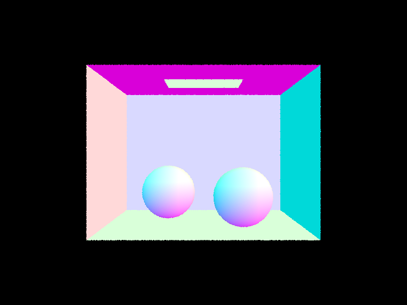
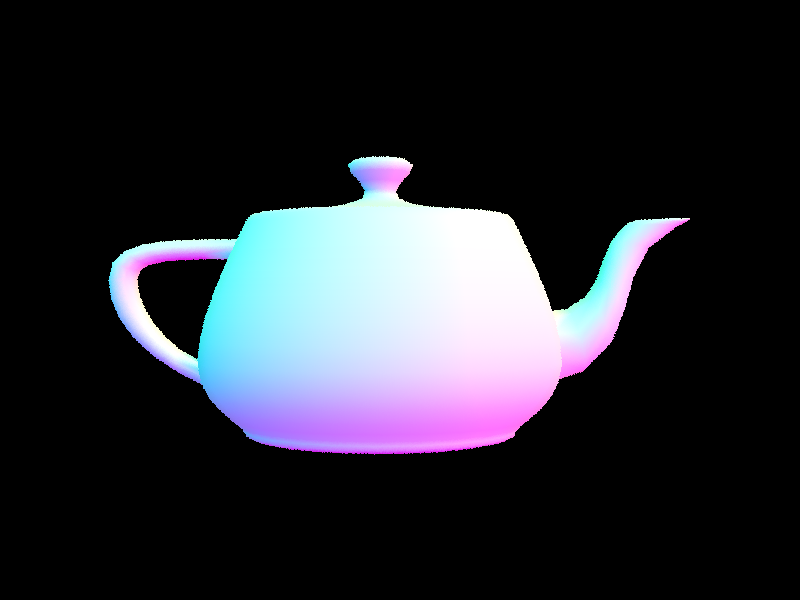
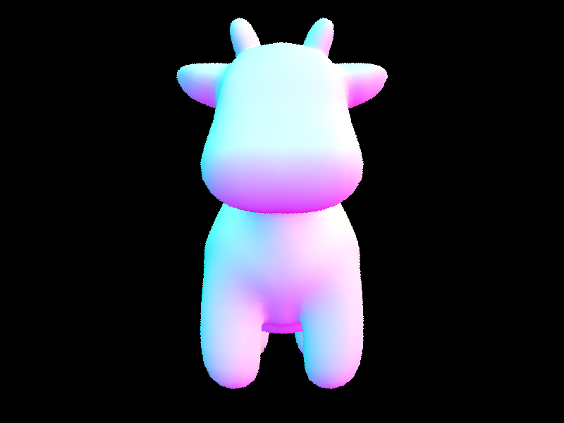
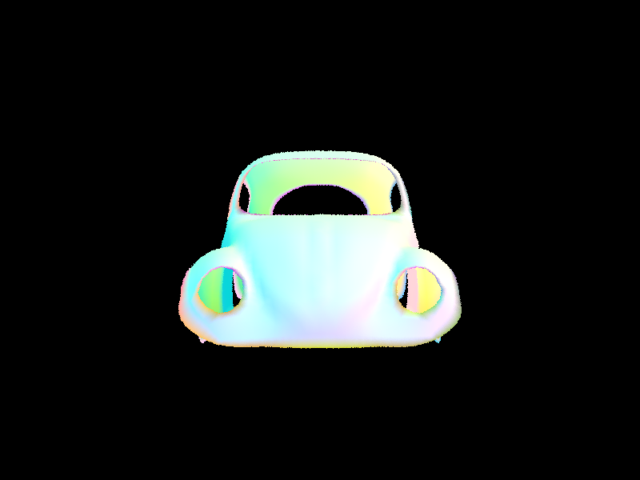
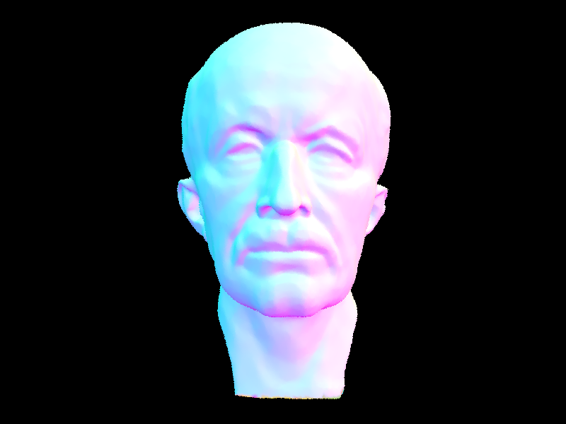
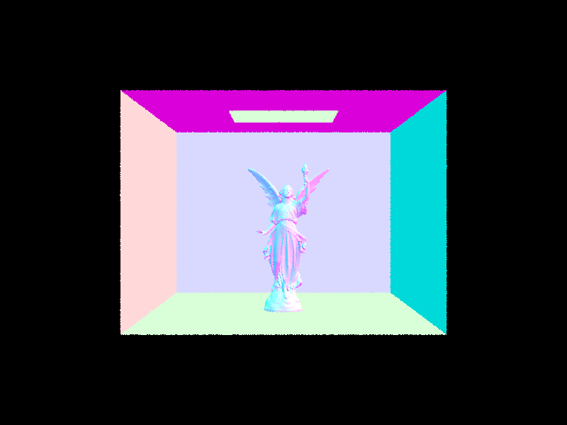

OVERVIEW HERE
Grader's Note: NOTE HEREThe basic pipeline for Part 1 of this problem revolves around generating and checking the intersections of camera rays.
The most basic task is converting between camera coordinates and world coordinates. By doing so, we are able to map locations on the image to virtual camera space, which makes raycasting in world-space able to draw onto the camera space.
Then, we write a sampler that allows us to estimate radiance by drawing rays. Specifically, we use Monte Carlo randomly sampled estimates in order to approximate the lighting across the image. We then draw the calculated radiance in each of R, G, B to the pixel buffer.
Finally, we are able to begin raycasting into tris and spheres. Raycasting works by emitting a large number of rays from the camera, which fall on the scene and measure the scene's color at various points. The fundamental action, then, is figuring out where exactly each ray falls on the scene so we know where to measure.
For triangles, I used the Moller-Trumbore algorithm to find the barycentric coordinates of, and distance to, the intersection between the
ray and each triangle's plane. The algorithm is simply an application of Cramer's Rule, and is a computationally faster way to solve the ray intersection equation
O+tD = (1-b1-b2)P0 + b1P1 + b2P2
for the values of t, b1, and b2, which are the distance to intersection and two of its barycentric coordinates (the third coordinate may be extrapolated). Once we have the
barycentric coordinates for the triangle, we can tell if the intersection is in the triangle by checking if any of the barycentric coordinates are less than
zero.
For spheres, the same goal of solving for t, b1, and b2 is relevant. In this instace, though, no special algorithm is necessary -- simply solving a quadradic equation using the quadratic formula will suffice. The surface normal can then be calculated as we know the center of the sphere's position, and the knowledge that the normal is the direction connecting the center to the ray's contact point.
Let's look at some simple images rendered using this pipeline.
First is this basic scene with spheres.
Next is this teapot.
This cow can also be rendered by the pipeline.
Lastly, this car frame can just barely be rendered by the pipeline, taking nearly a minute on my machine even with the acceleration from Moller-Trumbore. For more complex models, we'll need to leverage BVH.
My BVH algorithm recursively divides a scene into areas to prevent the need to check each ray against every primitive. Instead, primitives are sorted into bounding boxes based on their positions in the scene, and only those primitives that the ray passes through are checked for intersection. By sorting these boxes into a tree structure, rendering time is reduced from O(P) to O(log P).
For my implementation, I split each bounding box at the average position of the primitives contained within it. I chose average over centroid because with the centroid method, a single large triangle can cause the child bounding boxes to be very imbalanced. With average, a single object only has one centroid, so the split will occur more evenly. BVH fails when bounding boxes are very imbalanced so this seemed like an important case to avoid.
Let's look at some images only practically possible with the power of BVH.
This model of Planck containing thousands of triangles is only practically possible with BVH. It rendered in a tenth of a second.
As is this statue with tens of thousands of triangles. Notice how this image can cause the "teapot in a stadium" effect by having a very complex object surrounded by simple geometry. On my machine, it took 0.2 seconds to render with BVH acceleration.
Comparing non-BVH to BVH shows the incredible speed-up offered by the system. The teapot goes from taking 30 seconds to 0.1 seconds. The cow goes from 40 to 0.1 as well, as does the beetle go from 45 to 0.1. The Max Planck and Lucy images take over two minutes to render with no BVH, barely making it even 10% of the way in that time. With BVH, however, each is done in 0.3 seconds or less every time. Looking into the breakdown, for those two models, it actually takes more time to build the BVH than it does to actually render the image -- building the BVH takes 0.15 seconds while rendering takes 0.1. Clearly, the speedup offered by BVH is incredible.